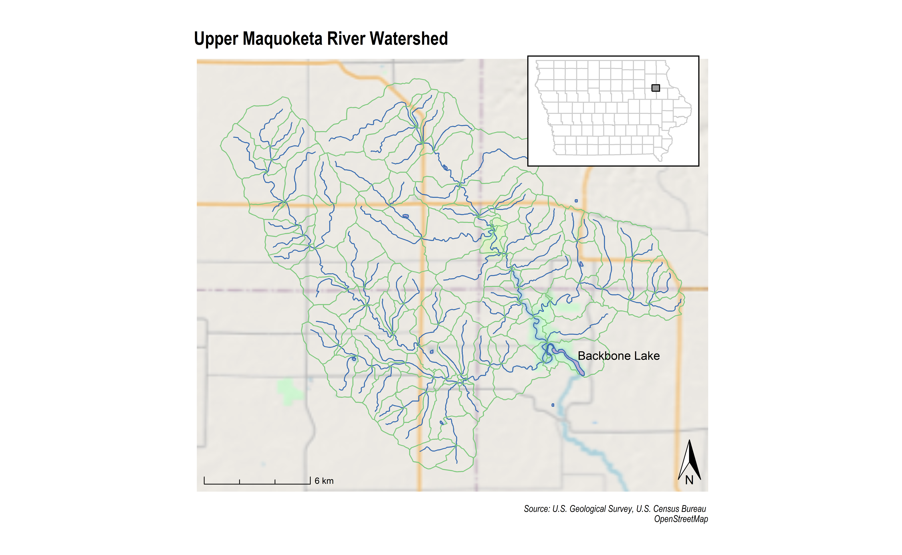

Backbone Watershed
Jim Gruman
December 16, 2020
Last updated: 2020-12-16
Checks: 7 0
Knit directory: myTidyTuesday/
This reproducible R Markdown analysis was created with workflowr (version 1.6.2). The Checks tab describes the reproducibility checks that were applied when the results were created. The Past versions tab lists the development history.
Great! Since the R Markdown file has been committed to the Git repository, you know the exact version of the code that produced these results.
Great job! The global environment was empty. Objects defined in the global environment can affect the analysis in your R Markdown file in unknown ways. For reproduciblity it’s best to always run the code in an empty environment.
The command set.seed(20200907) was run prior to running the code in the R Markdown file. Setting a seed ensures that any results that rely on randomness, e.g. subsampling or permutations, are reproducible.
Great job! Recording the operating system, R version, and package versions is critical for reproducibility.
Nice! There were no cached chunks for this analysis, so you can be confident that you successfully produced the results during this run.
Great job! Using relative paths to the files within your workflowr project makes it easier to run your code on other machines.
Great! You are using Git for version control. Tracking code development and connecting the code version to the results is critical for reproducibility.
The results in this page were generated with repository version 7bf2aeb. See the Past versions tab to see a history of the changes made to the R Markdown and HTML files.
Note that you need to be careful to ensure that all relevant files for the analysis have been committed to Git prior to generating the results (you can use wflow_publish or wflow_git_commit). workflowr only checks the R Markdown file, but you know if there are other scripts or data files that it depends on. Below is the status of the Git repository when the results were generated:
Ignored files:
Ignored: .Rhistory
Ignored: .Rproj.user/
Ignored: data/Starmont.rds
Ignored: data/acs_poverty.rds
Ignored: data/fmhpi.rds
Ignored: data/hike_data.rds
Ignored: data/ia_counties.rds
Ignored: data/landmarks.rds
Ignored: data/us_states.rds
Ignored: data/weatherstats_toronto_daily.csv
Untracked files:
Untracked: rosm.cache/
Unstaged changes:
Modified: .gitignore
Note that any generated files, e.g. HTML, png, CSS, etc., are not included in this status report because it is ok for generated content to have uncommitted changes.
These are the previous versions of the repository in which changes were made to the R Markdown (analysis/BackboneWatershed.Rmd) and HTML (docs/BackboneWatershed.html) files. If you’ve configured a remote Git repository (see ?wflow_git_remote), click on the hyperlinks in the table below to view the files as they were in that past version.
| File | Version | Author | Date | Message |
|---|---|---|---|---|
| Rmd | 7bf2aeb | opus1993 | 2020-12-16 | wflow_publish(“analysis/BackboneWatershed.Rmd”) |
| html | b909a98 | opus1993 | 2020-12-16 | Build site. |
| Rmd | fb26c93 | opus1993 | 2020-12-16 | wflow_publish(“analysis/BackboneWatershed.Rmd”) |
David Blodgett has a growing set of tools coming together for manipulation of hydrographic data in the nhdplusTools R package that accesses the US National Hydrography Dataset. In place of #TidyTuesday this week, I thought I’d explore the functions available and datasets through the vignettes that he provides at the package website.
We are going to take a closer look at Iowa’s Backbone State Park, which is marking it’s 100th year in 2020.
knitr::opts_chunk$set(
echo = TRUE,
fig.height = 7.402,
fig.width = 12,
message = FALSE,
warning = FALSE,
cache = FALSE,
cache.lazy = FALSE,
df_print = "paged",
dpi = 300,
tidy = "styler"
)As of today, the published CRAN version of nhdplusTools is 0.3.16. I’m going to load the 0.4.0 dev version at the open github repo.
remotes::install_github("USGS-R/nhdplusTools")As always, let’s load the required packages into the namespace. My windows machine has GDAL 3.0.4 installed.
suppressPackageStartupMessages({
library(sf)
library(ggspatial)
library(cowplot)
library(tidyverse)
library(here)
library(tigris)
library(nhdplusTools)
library(hrbrthemes)
})
extrafont::loadfonts(quiet = TRUE)
theme_set(theme_ipsum() +
theme(plot.title.position = "plot"))
pal <- RColorBrewer::brewer.pal(5, "Accent")First, we will select a location of interest and query data for download. This particular point is close to Iowa’s Backbone State Park and the village of Dundee, Iowa.
backbone <- st_sfc(st_point(c(-91.536627, 42.602156)), crs = 4326)
start_comid <- discover_nhdplus_id(backbone)The following definitions have been used as much as possible throughout the nhdplusTools package:
Flowline: The NHD name for a geometric representation of a flowing body of water, including a river or a creek.
Catchment: A physiographic unit with zero or one inlets and one outlet, as a basin culminating in a flowpath, divide, and networks of flowpaths and divides.
Let’s find the nearest flowlines, and then subset by bounding box for the related catchments.
flowline <- navigate_nldi(list(
featureSource = "comid",
featureID = start_comid
),
mode = "upstreamTributaries",
distance_km = 1000
)
subset_file <- tempfile(fileext = ".gpkg")
subset <- subset_nhdplus(
comids = flowline$UT$nhdplus_comid,
output_file = subset_file,
nhdplus_data = "download",
flowline_only = FALSE,
return_data = TRUE
)
flowline <- subset$NHDFlowline_Network
catchment <- subset$CatchmentSP
waterbody <- subset$NHDWaterbodyThe Maquoketa River rises in southeastern Fayette County just southwest of Arlington. It flows briefly northeastward, then generally southeastward through Clayton into Delaware County, through Backbone State Park and the town of Dundee. The river and its tributaries mark the border of the Driftless Area of Iowa, with the areas east of it not having been covered by ice during the last ice age. Its name derives from Maquaw-Autaw, which means “Bear River” in Meskwaki.
if (file.exists("data/ia_counties.rds")) {
IA <- read_rds("data/ia_counties.rds")
} else {
IA <- counties(state = "IA", cb = TRUE)
write_rds(IA, "data/ia_counties.rds")
}
sites_box <- st_make_grid(st_bbox(catchment), n = 1)
ia_map <- ggplot() +
geom_sf(data = IA, fill = NA, color = "gray80") +
geom_sf(data = sites_box, col = "black", fill = "gray60") +
coord_sf(datum = NA) +
theme_nothing() +
labs(x = NULL, y = NULL) +
theme(
panel.background = element_rect(color = "black", size = 1, linetype = 1)
)nicemap <- ggplot(data = flowline, aes()) +
annotation_map_tile(type = "osm", zoom = 10, forcedownload = FALSE) +
annotation_map_tile(type = "hillshade", zoom = 10, forcedownload = FALSE, alpha = 0.3) +
geom_sf(col = pal[5]) +
geom_sf(data = catchment, aes(), alpha = 0.3, color = pal[1], fill = NA) +
geom_sf(data = waterbody, aes(), fill = pal[2], color = pal[5]) +
coord_sf() +
labs(
title = "Upper Maquoketa River Watershed", x = NULL, y = NULL,
caption = "Source: U.S. Geological Survey, U.S. Census Bureau \nOpenStreetMap"
) +
annotation_scale(location = "bl", style = "ticks") +
annotation_north_arrow(
width = unit(.3, "in"),
pad_y = unit(.1, "in"), location = "br",
which_north = "true"
) +
annotate("text",
x = -91.51,
y = 42.61,
label = "Backbone Lake",
size = 4
) +
theme(
axis.text.x = element_blank(),
axis.text.y = element_blank()
)(map_with_inset <-
ggdraw(nicemap) +
draw_plot(ia_map, x = 0.58, y = 0.7, width = .2, height = .2))
Let’s add the school district boundary polygon and the nearby towns:
if (file.exists("data/Starmont.rds") & file.exists("data/landmarks.rds")) {
Starmont <- read_rds("data/Starmont.rds")
landmarks <- read_rds("data/landmarks.rds")
} else {
Starmont <- school_districts(state = "IA") %>%
filter(stringr::str_detect(NAME, "Starmont"))
landmarks <- st_crop(landmarks(state = "IA", type = "point"), st_bbox(catchment)) %>%
filter(FULLNAME %in% c("Lamont", "Dundee", "Strawberry Pt", "Arlington"))
write_rds(Starmont, "data/Starmont.rds")
write_rds(landmarks, "data/landmarks.rds")
}
nicemap +
geom_sf(data = Starmont, aes(), fill = pal[4], color = pal[3], alpha = 0.2) +
geom_sf(data = landmarks, aes()) +
geom_sf_label(data = landmarks, aes(label = FULLNAME), nudge_y = 0.01) +
labs(subtitle = "Starmont Community School District")
Adding
soil types
waste management permit hold
elevations / topography
rayshading
NVDI satellite imagery
sessionInfo()R version 4.0.3 (2020-10-10)
Platform: x86_64-w64-mingw32/x64 (64-bit)
Running under: Windows 10 x64 (build 19041)
Matrix products: default
locale:
[1] LC_COLLATE=English_United States.1252
[2] LC_CTYPE=English_United States.1252
[3] LC_MONETARY=English_United States.1252
[4] LC_NUMERIC=C
[5] LC_TIME=English_United States.1252
attached base packages:
[1] stats graphics grDevices utils datasets methods base
other attached packages:
[1] hrbrthemes_0.8.6 nhdplusTools_0.4.0 tigris_1.0 here_1.0.1
[5] forcats_0.5.0 stringr_1.4.0 dplyr_1.0.2 purrr_0.3.4
[9] readr_1.4.0 tidyr_1.1.2 tibble_3.0.4 ggplot2_3.3.2
[13] tidyverse_1.3.0 cowplot_1.1.0 ggspatial_1.1.4 sf_0.9-6
[17] workflowr_1.6.2
loaded via a namespace (and not attached):
[1] colorspace_2.0-0 ellipsis_0.3.1 class_7.3-17
[4] rgdal_1.5-18 rprojroot_2.0.2 fs_1.5.0
[7] rstudioapi_0.13 farver_2.0.3 fansi_0.4.1
[10] lubridate_1.7.9.2 xml2_1.3.2 codetools_0.2-16
[13] R.methodsS3_1.8.1 extrafont_0.17 rosm_0.2.5
[16] memuse_4.1-0 knitr_1.30 jsonlite_1.7.2
[19] broom_0.7.2 Rttf2pt1_1.3.8 dbplyr_2.0.0
[22] png_0.1-7 R.oo_1.24.0 compiler_4.0.3
[25] httr_1.4.2 backports_1.2.1 assertthat_0.2.1
[28] cli_2.2.0 prettymapr_0.2.2 later_1.1.0.1
[31] htmltools_0.5.0 tools_4.0.3 igraph_1.2.6
[34] gtable_0.3.0 glue_1.4.2 RANN_2.6.1
[37] rappdirs_0.3.1 Rcpp_1.0.5 cellranger_1.1.0
[40] styler_1.3.2 raster_3.4-5 vctrs_0.3.5
[43] extrafontdb_1.0 xfun_0.19 ps_1.5.0
[46] rvest_0.3.6 lifecycle_0.2.0 scales_1.1.1
[49] hms_0.5.3 promises_1.1.1 parallel_4.0.3
[52] RColorBrewer_1.1-2 yaml_2.2.1 curl_4.3
[55] gdtools_0.2.2 stringi_1.5.3 maptools_1.0-2
[58] e1071_1.7-4 rlang_0.4.9 pkgconfig_2.0.3
[61] systemfonts_0.3.2 evaluate_0.14 lattice_0.20-41
[64] tidyselect_1.1.0 plyr_1.8.6 magrittr_2.0.1
[67] R6_2.5.0 generics_0.1.0 DBI_1.1.0
[70] pillar_1.4.7 haven_2.3.1 whisker_0.4
[73] foreign_0.8-80 withr_2.3.0 units_0.6-7
[76] abind_1.4-5 dataRetrieval_2.7.6.9002 sp_1.4-4
[79] modelr_0.1.8 crayon_1.3.4 uuid_0.1-4
[82] KernSmooth_2.23-18 rmarkdown_2.6 grid_4.0.3
[85] readxl_1.3.1 git2r_0.27.1 reprex_0.3.0
[88] digest_0.6.27 classInt_0.4-3 R.cache_0.14.0
[91] httpuv_1.5.4 R.utils_2.10.1 munsell_0.5.0
[94] fst_0.9.4